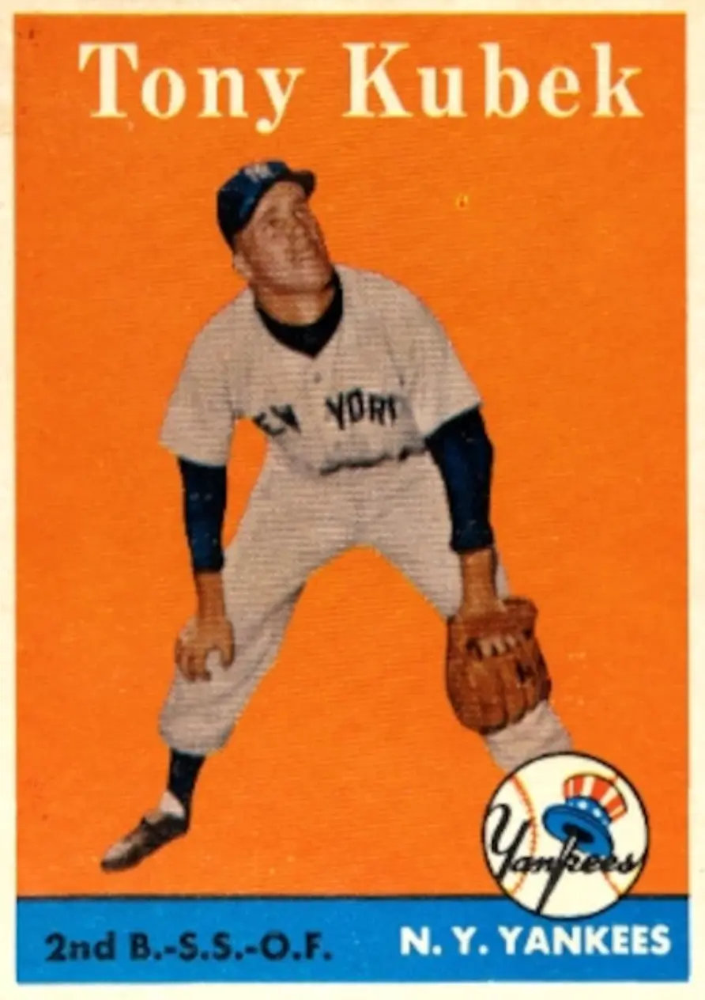

Tony Kubek
Career Highlights & Facts
(Facts are AI-generated and may require verification)
- Earned top rookie honors after a debut season featuring 17 consecutive games with a hit.
- Suffered a serious throat injury during a championship series after being struck by a batted ball.
- Transitioned from the diamond to a 24-year career as a nationally recognized television broadcaster.
Would you like to find out more about Tony Kubek?
Read Player Biography
Tony Kubek
January 4, 2012
/
in
BioProject - Person
Ford C. Frick Award
,
Rookie of the Year
1950s All-Stars
,
1960s All-Stars
Broadcasters
/
by
admin
This article was written by
Joseph Wancho
Tony Kubek was a bit anxious. Not just because he was the starting left fielder for the New York Yankees, or that he was a rookie who was participating in his first World Series. But the series had shifted to his hometown of Milwaukee. For the first time,
his family would see him play in a major-league game
. The Braves had moved from Boston to Milwaukee after the 1952 season, and his family and friends were big supporters of the home team. For the Series, he was able to fulfill the ticket requests that came his way from family and friends, and it seemed to him that everywhere he looked around
County Stadium
, he saw a familiar face.
The Series had begun in New York, with the teams splitting two games before heading west. In the first game in Milwaukee, with one out in the top of the first inning, Kubek, who was one week shy of his 22nd birthday, stepped in against Braves starter
Bob Buhl
. He hit a home run off of Buhl; the baseball just cleared the fence in right field. As he rounded the bases, Kubek paused at second and glanced out at right field as if he had doubts that the ball had gone over. “I guess I just looked because I was surprised,” he said later.
In the fourth inning Kubek singled and scored on a
Mickey Mantle
blast. Then in the seventh Kubek went deep again, stroking a three-run homer off
Bob Trowbridge
. “I was shaking with excitement as I trotted around the bases (after his first home run), and to my amazement there was the most deafening silence I had ever heard,” he said. “In the seventh inning, again I went around the bases. I couldn’t hear a sound coming from the crowd of more than 45,000. It was as if nothing happened. And the stands were filled with relatives and friends who had known me all my life. Not a peep.”
Perhaps the Milwaukee faithful were a bit stunned that Kubek, who had hit only three home runs all season, hit two in one game. So much for nerves for the left-handed swinging Kubek, as the Yankees took the lead in the Series with a 12-3 victory. “Go home and tell your mother and father thanks from all of us,” Yankee manager
Casey Stengel
told Tony.
Anthony Christopher Kubek was born on October 12, 1935, in Milwaukee. He was the middle child of three with older sister Carol and younger sister Christine. Tony’s father was an outfielder with the Milwaukee Brewers of the American Association but did not make it the major leagues. The year Tony was born, he had been invited to try out with the St. Louis Browns, but the money offered was too low. He went to work in a tannery, a tool and tie plant, and a brewery, and then found some security working for the Post Office.
Tony attended Bay View High School, excelling in football, basketball, and track. After his freshman year, Bay View dropped baseball. Kubek kept playing in sandlot leagues across Milwaukee, catching the eye of New York scout
Lou Maguolo
. In 1952, at the age of 16, Kubek earned himself a spot in the prestigious
Hearst Sandlot Classic
at
Yankee Stadium
, pitting New York All Stars against players from around the country.
Many teams had scouts at the game, and Tony attracted their attention. Teams began to send scouts to Milwaukee to get a closer look at him. But Maguolo had the inside track, because the Yankees were the team he really wanted to play for; he hoped to be able to replace the Yankees’
Phil Rizzuto
, whose career was winding down. So when Kubek graduated from Bay View High in 1954, he signed with the Yankees for a $1,500 bonus and was assigned to Owensboro, Kentucky, of the Class D Kitty League.
“There were quite a few clubs interested in me,” said Kubek, “but the only one I was interested in was the New York Yankees. Money never occurred to me. I wanted to play, so I wasn’t interested in any kind of money that would make me a bonus player.” At that time any player who got a signing bonus of more than $3,000 had to spend his first two years on the major-league roster. The Yankees already had two “bonus baby” players on their roster, infielders
Frank Leja
and
Tom Carroll
. (Neither was kept after his two-year stint was completed.)
For the next three years Kubek attended Stengel’s instructional school, which was held for the Yankees’ top prospects just before the start of spring training. He climbed through the Yankees’ minor-league chain in three seasons. Playing shortstop at Owensboro he hit .344 in 113 games, and moved up to Quincy, Illinois, of the Class B Three I League, where he hit .334 with 14 home runs in 1955. At the end of Quincy’s season he got a brief call-up to the Denver Bears of the Triple-A American Association. At Denver Kubek formed a strong friendship with Bobby Richardson, who would be his keystone partner for nine seasons in New York.
Kubek’s manager at Denver was
Ralph Houk
, who managed him in New York for three seasons in the 1960s. Houk saw through Kubek’s mild-mannered persona. “Tony is fiercely competitive,” he recalled. “We were in a playoff with Omaha in 1956, and they had this pitcher who was knocking our hitters down pretty good. Well, Tony came to bat and dragged a ball down toward first base and when the pitcher came over to cover; Tony whacked into him and almost broke him into two.”
Although Kubek was a stalwart at shortstop through his minor-league years, the Yankees had a solid player in
Gil McDougald
manning the position. During spring training Stengel used Kubek all over the diamond. “The Kubek situation is such I play him every day for nine innings, not three or four,” Stengel said. “I can see him at bat, how he runs the bases which he does fast, how much he executes the plays and how he’ll play left field if I open him there. Then we’d have three outfielders with great arms,
(Hank) Bauer
, Mantle, and Kubek. If it’s shortstop, he can play shortstop, and I must switch my infield for McDougald and
(Billy) Martin
. I ain’t saying I am putting him on the team, but I am preparing him.”
Prepared Kubek was in 1957, his rookie season, as he started 31 games in left field, 22 in center field, 41 at shortstop, and 38 games at third base. A rough start at the plate saw Kubek bottom out to a .243 batting average. But a 17-game hitting streak from June 30 to July 21 raised his average to .312. If the constant shifting of positions affected Kubek, it did not show as he finished with a .297 average on his way to chosen American League Rookie of the Year by the Baseball Writers Association of America and
The Sporting News
.
The Yankees held off the stubborn Chicago White Sox to claim their third straight pennant, and faced the Milwaukee Braves in the World Series. Despite his heroics in Game Three, it was Kubek’s throwing error in the third inning of Game Seven that opened the door for the Braves to score four runs. Kubek was playing third base when, with a runner on first, he threw high to second on a groundball off the bat of
Johnny Logan
. Both runners were safe, and they scored on
Eddie Mathews’
double. Milwaukee won the game, 5-0, and the Series. The Yankees could not solve pitcher
Lew Burdette
, who posted a 3-0 record in the series.
Based on his strong rookie campaign, Kubek earned the starting shortstop job in 1958. McDougald moved over to second base, keeping
Bobby Richardson
on the bench. Kubek and McDougald formed one of the best double-play combinations in the league. Kubek totaled 98 twin-killings on the year while McDougald chalked up 97. “They kill you both ways,” said Chicago manager
Al Lopez
, “both in the field and at bat.”
After a .297 season in 1957, injuries hampered Kubek in 1958. (Still, he was selected to the American League All Star squad, though he didn’t play in the game.) His batting average for the month of August was .265, and dropped to .232 in September. Kubek suffered through an impacted wisdom tooth and then pulled a thigh muscle. His average for the season was .263, 32 points lower than in his rookie season. One oddity occurred on June 1 at Boston: As
Bob Turley
beat the Red Sox, 10-4, Kubek, playing shortstop, did not have a single putout or assist.
The Yankees won the American League again, besting the White Sox, and this time they took the Braves in seven games in a rematch from the year before. For Kubek, the two Series were in sharp contrast: After batting .286 in the ’57 Series, he went 1-for-21 (.048) in 1958 with seven strikeouts.
After the Series Kubek was inducted into the US Army Reserve and was assigned to Fort Leonard Wood, Missouri. He was slated to complete six months of duty but was discharged in late March and rejoined the Yankees ten days before the start of the 1959 season.
Stengel returned to his platoon system, with Kubek and McDougald splitting time at shortstop. Tony also was used at third base and at all three outfield positions. That season was the charm for the White Sox as they took control of a close race with New York and Cleveland to claim the team’s first pennant in 40 years. The Yankees finished in third place, 15 games off the pace, hovering around the .500 mark.
The Yankees were back on track in 1960, winning the first of five consecutive pennants. At spring training, Stengel revealed his “Ten Commandments” for the Yankees. Number 6 was “Get Kubek to play the kind of shortstop he can and hit the way he should.” Like many managers, Casey believed that the corner outfielders should be players who could swat home runs and drive in runs. Perhaps he came to the realization that although Kubek was a fine fielder, Tony was not the power hitter he was looking for to play that position.
New York acquired
Roger Maris
and
Joe DeMaestri
from Kansas City in December 1959. Maris gave Stengel the strength Casey hungered for in an outfielder, both at the plate and in the field. DeMaestri’s contribution was more subtle. He was a fine fielder, as he had been the starting shortstop for the Athletics the previous five seasons. He served as an effective defensive replacement late in games for the Yankees. When he spelled Kubek at shortstop, Stengel would often move Tony to left field to replace
Yogi Berra
.
McDougald announced that the 1960 season would be his last, but the Yankees were prepared to move on without Gil as
Clete Boyer
received most of the starts at third base. With Mantle, Maris, Berra, Clete Boyer, and first baseman
Bill Skowron
, the Yankees lineup looked like a modern-day Murderers Row.
In 1960 Stengel stopped shuttling Kubek all over the diamond. He played in 136 games at shortstop and just 29 in the outfield, and put up his best power numbers, slamming 14 round-trippers and driving in 62 runs. “Now this man Kubek has improved tremendously as a fielder and a batter,” said Stengel. “He is determined, ambitious, and the leading young player on my club. Is he the best shortstop in the business? No. But he can play at any of five positions on this ball team.”
The Yankees faced the Pittsburgh Pirates in the World Series. The Pirates were making their first Series appearance since 1927, when they were swept by New York in four games. The Yankees were heavy favorites this time. In a curious move, Stengel moved his ace pitcher,
Whitey Ford
, back in the rotation. Ford took the hill for only two starts, Games Three and Six, shutting out the Bucs in both games.
With the Series tied at three wins apiece, Game Seven, at
Forbes Field
in Pittsburgh, was a back-and-forth contest. The Yankees scored two runs in the top of the eighth inning to take a 7-4 lead. “With us hitting in the top of the eighth, I went down to the bullpen to get loose,” said DeMaestri. “I was sure I was going into the game. That’s what Casey had done all season and during the series.” Kubek asked Stengel about the switch before leaving the dugout, but Stengel just motioned that he was not worried.
Pinch-hitter
Gino Cimoli
singled to start the bottom of the eighth. Center fielder
Bill Virdon
hit a groundball to Kubek at short. Tony threw his head back as the ball appeared to be heading for his nose or eyes, but the baseball ended up striking him in the throat. He collapsed on the field. He wanted to remain in the game, but he couldn’t talk. It was later revealed that the force of the blow had narrowed the diameter of Kubek’s windpipe from the size of a quarter to a dime. By the time
Bill Mazeroski
hit the game-winning, Series-clinching, home run to left field in the bottom of the ninth inning, Kubek was on his way to the hospital.
After the season Stengel was fired by the Yankees, a move that was not made in haste by the front office. In a postseason interview the previous year, Yankees co-owner
Dan Topping
had remarked that “
[Del] Webb
and I know how great Casey is, what wonderful things he has done for the Yankees, for baseball. But, approaching 70, he presents a problem. I do not want to assume the responsibility for his well-being against the impacts of his job. “
Ralph Houk was Stengel’s successor, and under him the Yankees won two straight world championships, besting Cincinnati in 1961 and San Francisco in 1962. While Mantle and Maris chased
Babe Ruth’s
single-season home-run record in 1961, Kubek set a more modest record by smacking 38 doubles (second in the league), then a record for Yankee shortstops. Tony enjoyed an 18-game hitting streak from May 22 to June 9, and was named the starting shortstop for the American League in the All-Star Game. Houk made it a point to declare that Kubek was his man at short. It was a big relief to Tony, who commented, “Houk adds greatly to our confidence as individuals, and as a team.”
Kubek showed off his defensive acumen at
Comiskey Park
on July 13. With
Luis Aparicio
on first base for the White Sox,
Nellie Fox
slapped a ball between third and short on a hit-and-run play. Boyer went to his left, but the ball got past him. Kubek fielded the ball in the hole and threw Fox out at first base. Aparicio, seeing that third base was unprotected as he circled second, raced for the bag. Kubek sprinted beside him and retrieved a high throw from first baseman
Bob Cerv
to make the tag on Aparicio.
In the 1961 World Series the Yankees dispatched the Reds in five games. Despite his success on the field, it was life away from the diamond that impacted Tony’s life over the next year. On October 21 he married Margaret Timmel in Watertown, Wisconsin. On November 4 Kubek was recalled to active duty and reported to Fort Lewis, Washington. He joined the 127th infantry of the 32nd Division, a Wisconsin National Guard unit. It was believed that Kubek might be lost to the Yankees for the entire 1962 season; general manager Roy Hamey commented that he was “the guy we could least afford to be without for any length of time.” While Kubek was absent,
Tom Tresh
stepped in and performed admirably. Like Kubek in his rookie year, Tresh split his time between shortstop and the outfield. And like Kubek, Tresh won the baseball writers’ and
The Sporting News’
Rookie of the Year honors
.
Kubek was discharged earlier than expected, joining the team in early August. In his first game back, he was in the starting lineup on August 7 against the Minnesota Twins, and in his first at-bat he slugged a three-run homer off
Camilo Pasqual
. In a doubleheader against Boston on September 9, Kubek went 6-for-10. Five of his hits came in the second game, a 16-inning affair. Unfortunately for New York, the Red Sox swept the twin bill.
New York was nursing a four-game lead over Minnesota on September 18, but went 7-3 the rest of the way to win the 1962 pennant, then defeated the San Francisco Giants in seven games in the World Series. Richardson was thrilled to have his partner back in the lineup. “It was easy getting back in the swing of things with Tony,” Richardson said. “We’ve been playing together around second base since our minor-league days. The only difference I can see about Tony is that he’s a better shortstop now than he ever was.”
The 1963 season roster resembled a disabled list at times. Kubek hurt his back when he bent over to pick up a groundball in spring training. He couldn’t straighten himself. Then he collided with Tom Tresh in
Fenway Park
on a fly ball to left. His replacement,
Phil Linz
, ripped ligaments in his right knee on an attempted steal. Mantle broke his left foot when his spikes caught on a chain-link fence in Baltimore. Maris slammed a foul ball off his left ankle and missed several games. But the Yankees’ pitching carried them through in 1963 with Whitey Ford leading the league in wins with 24, and
Jim Bouton
adding 21.
Although Kubek was fielding as efficiently as ever, his game suffered at the plate. In one stretch in early May he went 1-for-32, lowering his batting average to .162. He suffered from back pain most of the season, and at times could not lift his right arm completely. His condition was getting progressively worse. What was frustrating to Kubek was that he was not sure what happened to cause his discomfort.
Although the Yankees waltzed to the pennant, the World Series was another matter. New York was swept in four games by the Los Angeles Dodgers. The Yankees’ anemic offense totaled just four runs.
After the Series Hamey retired from the front office, and Houk was kicked upstairs to fill the general manager position. Yogi Berra was tagged to be the field manager. It was felt that in spite of the Yankees’ success under Houk, he lacked the charisma that Stengel had to attract the average fan. Casey had moved on to take the helm of the New York Mets since their expansion year in 1962. Yankees co-owner Topping felt that the team was losing fans to Stengel and the Mets, now that theirs was not the only game in town.
Over the next two seasons, injuries piled up for Kubek. His back and neck continued to limit him, and his plate production continued to plummet. At time he felt numbness in his left hand, making it hard to grip a bat. On September 20, 1964, Kubek was so beyond frustration after striking out that he punched the dugout door violently, thinking that it was plywood. The door was really metal sheeting, giving Kubek a badly strained wrist and prematurely ending his season. He was replaced on the World Series roster by
Mike Hegan
.
Early in the 1965 campaign Kubek injured his left shoulder in a baseline collision in Kansas City. The injury lingered and affected his hitting all season. His 370 plate appearances were by far the lowest of his career, not counting his service year of 1962. “This type of injury makes you a now-and-then ball player,” Kubek said. “When you’ve been a regular and are expected to pretty much play every day, it’s tough to play today then not again until maybe next week.”
After the 1965 season Kubek traveled to the Mayo Clinic for tests to diagnose his physical problems. The tests determined that he was suffering from nerve damage at the top of his spinal column. The condition was brought on by a neck injury that did not heal properly. Kubek thought the neck injury might have happened in 1961, when he was playing touch football at Fort Lewis. He was upended on a play and landed upside down. His neck did not feel right, and for three days he went to the base clinic. But because so many people were seeking care, he was unable to get medical attention, so he stopped going. The doctors were surprised that he had not had more trouble but cautioned that a jarring or sudden movement might cause paralysis. At the age of 29 Tony Kubek retired from baseball in January 1966. His career batting average was .266, and his career fielding average at shortstop was .967. The Yankees’ winning percentage in games he played in was .601.
Kubek planned to move back to Wisconsin to become a vice president of a cheese manufacturing company. That plan was put on hold when an official of NBC, David Kennedy, mentioned to him that the network was looking for a color commentator for its major-league
Game of the Week
show. Kubek did not like to give interviews or talk publicly, but after talking with Chet Simmons, president of NBC Sports, he agreed to a six-week trial.
It turned into a 24-year gig for Kubek, who partnered over the years with giants of the broadcasting world including Jim Simpson,
Curt Gowdy
,
Joe Garagiola
, and Bob Costas. In a time before cable TV and satellite, Kubek’s was one of the voices that came into the living rooms of fans across the country every Saturday afternoon from April to September. In the beginning, he thought he talked too much on the air, babbling on and on endlessly. He began to bring an index card to the broadcasting booth that read “Shut up, already.” But his concern was unfounded as he was an instant hit, and a generation of baseball fans grew up listening to the articulate and knowledgeable Kubek. In all, he broadcast 11 World Series, 14 League Championship Series and 10 All-Star Games. He also served as a color commentator for the Toronto Blue Jays (1977-1989) and the Yankees (1990-1994).
In 2009 Kubek received the
Ford C. Frick
award, which is presented annually to a broadcaster for “major contributions to baseball.” The award is presented during the Hall of Fame induction ceremony each year. The recipients are recognized in the “Scribes & Mikemen” exhibit in the Library of the National Baseball Hall of Fame.
Tony and Margaret, Appleton, Wisconsin, residents, had four children, Tony Jr., Jimmy, Anne, and Margaret, and five grandchildren.
Sources
Golenbock, Peter.
Dynasty: The New York Yankees 1949-1964.
New York: Prentice Hall Inc., 1975
Kubek, Tony, and Terry Pluto.
61: The Team, The Record, The Men.
New York: Macmillan Publishing, 1987
Stout, Glenn, and Richard A Johnson.
Yankee Century.
Boston: Houghton Mifflin Company, 2002
The Sporting News
Baseball Digest
Sports Illustrated
New York Times
sabr.org
http://www.retrosheet.org/
http://minors.sabrwebs.com/cgi-bin/index.php
http://newyork.yankees.mlb.com/index.jsp?c_id=nyy&tcid=mm_cle_sitelist
http://mlb.mlb.com/index.jsp
http://www.baseballlibrary.com/homepage/
http://baseballhall.org/
Full Name
Anthony Christopher Kubek
Born
October 12, 1935 at Milwaukee, WI (USA)
Stats
Baseball Reference
Retrosheet
Tags
Ford C. Frick Award
·
Rookie of the Year
·
1950s All-Stars
·
1960s All-Stars
·
Broadcasters
·
Career Totals
| WAR | AB | H | HR | BA | R | RBI | SB | OBP | SLG | OPS | OPS+ |
|---|---|---|---|---|---|---|---|---|---|---|---|
| 18.4 | 4167 | 1109 | 57 | .266 | 522 | 373 | 29 | .303 | .364 | .667 | 85 |
Statistics via Baseball-Reference.com
The Original Clue